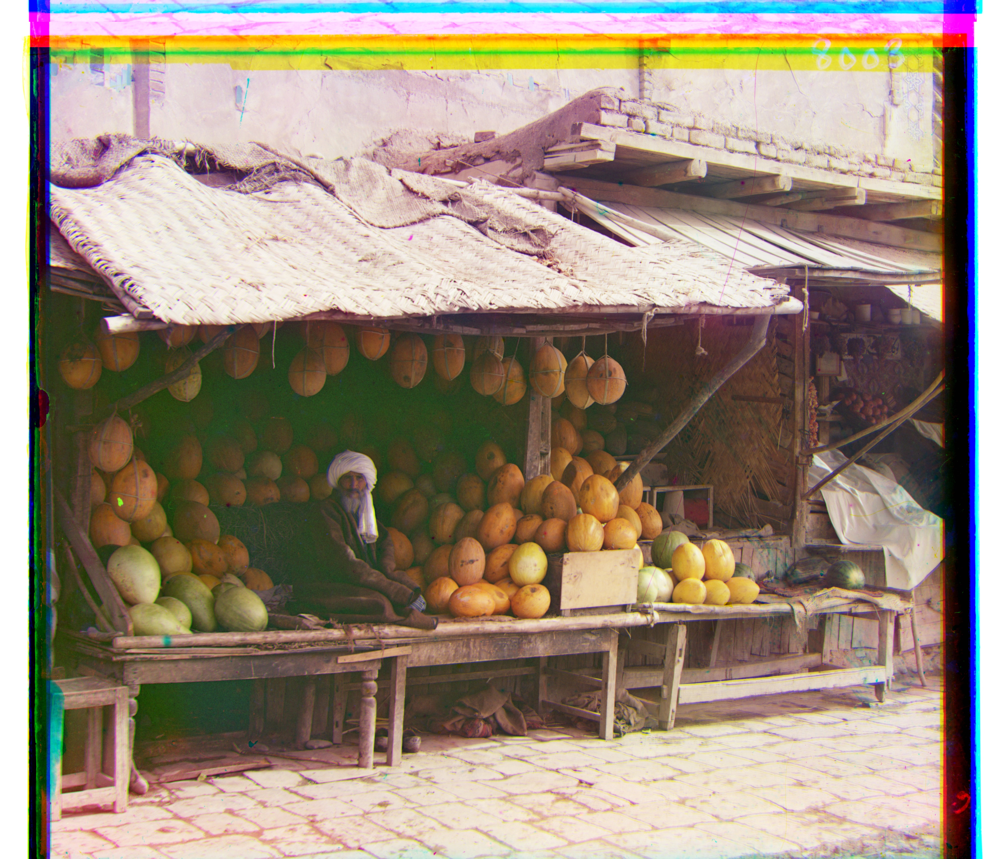
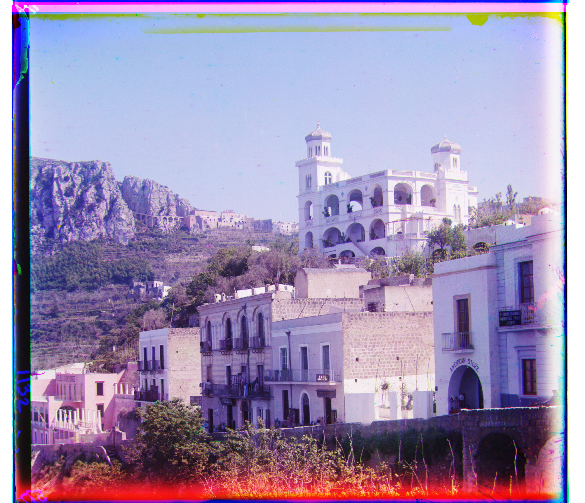
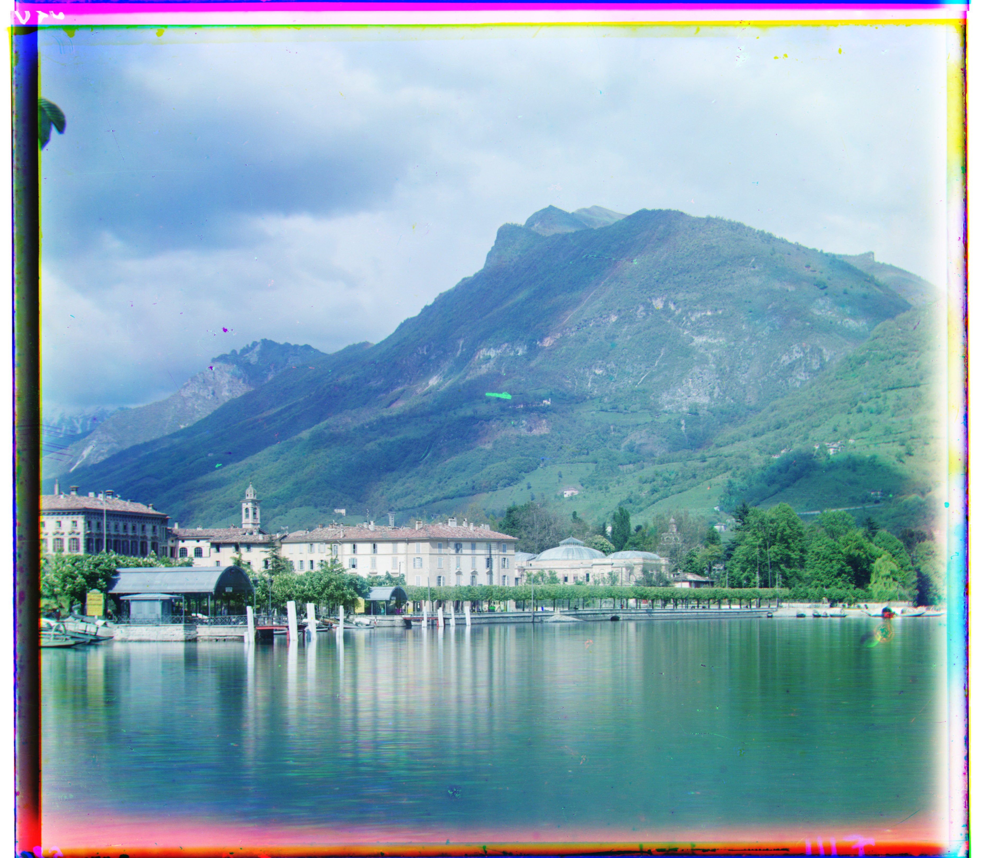
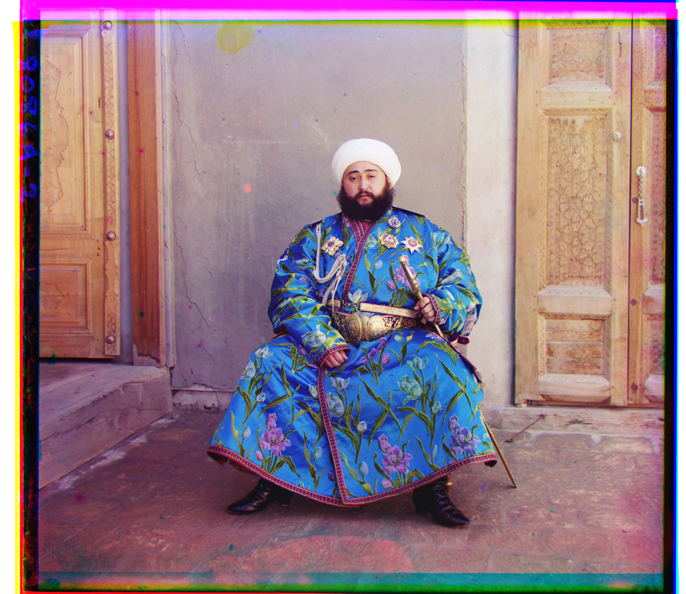

Neil Chen · CS 180 · Fall 2026
← Back





CathedralG: (2, 5)
R: (3, 12)
R: (3, 12)
MonasteryG: (2, −3)
R: (2, 3)
R: (2, 3)
TobolskG: (3, 3)
R: (3, 6)
R: (3, 6)
ChurchG: (0, 2) → (0, 3) → (1, 6) → (2, 12) → (4, 25)
R: (0, 4) → (−1, 7) → (−1, 15) → (−2, 29) → (−4, 58)
R: (0, 4) → (−1, 7) → (−1, 15) → (−2, 29) → (−4, 58)
Emir of BukharaG: (2, 3) → (3, 6) → (6, 12) → (12, 25) → (24, 49)
R: (−13, 9) → (−26, 18) → (−51, 36) → (−103, 71) → (−205, 141)
R: (−13, 9) → (−26, 18) → (−51, 36) → (−103, 71) → (−205, 141)
HarvestersG: (1, 4) → (2, 7) → (4, 15) → (8, 30) → (17, 60)
R: (1, 8) → (2, 16) → (3, 31) → (7, 62) → (13, 124)
R: (1, 8) → (2, 16) → (3, 31) → (7, 62) → (13, 124)
IconG: (1, 3) → (2, 5) → (4, 10) → (8, 20) → (17, 41)
R: (1, 6) → (3, 11) → (6, 22) → (11, 45) → (23, 89)
R: (1, 6) → (3, 11) → (6, 22) → (11, 45) → (23, 89)
IlemselgaG: (1, 2) → (1, 5) → (2, 10) → (4, 20) → (7, 40)
R: (1, 8) → (1, 16) → (3, 32) → (5, 65) → (11, 130)
R: (1, 8) → (1, 16) → (3, 32) → (5, 65) → (11, 130)
MelonsG: (1, 5) → (1, 10) → (3, 21) → (5, 41) → (10, 82)
R: (1, 11) → (2, 22) → (3, 45) → (7, 89) → (13, 178)
R: (1, 11) → (2, 22) → (3, 45) → (7, 89) → (13, 178)
Religious PaintingG: (0, 2) → (0, 3) → (1, 7) → (2, 14) → (3, 28)
R: (0, 4) → (1, 8) → (2, 17) → (3, 34) → (7, 68)
R: (0, 4) → (1, 8) → (2, 17) → (3, 34) → (7, 68)
Self PortraitG: (2, 5) → (4, 10) → (7, 20) → (14, 39) → (29, 79)
R: (2, 11) → (5, 22) → (9, 44) → (18, 88) → (37, 176)
R: (2, 11) → (5, 22) → (9, 44) → (18, 88) → (37, 176)
SirenG: (0, 3) → (−1, 6) → (−2, 12) → (−3, 25) → (−6, 49)
R: (−2, 6) → (−3, 12) → (−6, 24) → (−12, 48) → (−25, 96)
R: (−2, 6) → (−3, 12) → (−6, 24) → (−12, 48) → (−25, 96)
Three GenerationsG: (1, 3) → (2, 7) → (3, 13) → (7, 27) → (14, 53)
R: (1, 7) → (1, 14) → (3, 28) → (6, 56) → (11, 112)
R: (1, 7) → (1, 14) → (3, 28) → (6, 56) → (11, 112)
WharfG: (0, 1) → (−1, 2) → (−2, 4) → (−3, 8) → (−7, 15)
R: (−1, 5) → (−2, 10) → (−4, 21) → (−8, 41) → (−16, 83)
R: (−1, 5) → (−2, 10) → (−4, 21) → (−8, 41) → (−16, 83)



Milan CathedralG: (1, 4) → (2, 7) → (3, 14) → (6, 28) → (12, 57)
R: (1, 8) → (3, 16) → (6, 31) → (12, 63) → (24, 125)
R: (1, 8) → (3, 16) → (6, 31) → (12, 63) → (24, 125)
CapriG: (−1, 2) → (−2, 4) → (−4, 8) → (−8, 16) → (−16, 33)
R: (−2, 5) → (−3, 10) → (−6, 20) → (−12, 39) → (−25, 79)
R: (−2, 5) → (−3, 10) → (−6, 20) → (−12, 39) → (−25, 79)
LuganoG: (−1, 3) → (−2, 5) → (−4, 10) → (−8, 20) → (−16, 41)
R: (−2, 6) → (−4, 12) → (−7, 23) → (−14, 46) → (−29, 93)
R: (−2, 6) → (−4, 12) → (−7, 23) → (−14, 46) → (−29, 93)
